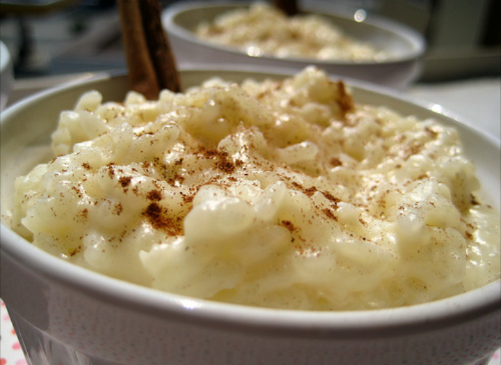

Arroz con leche

Descripcion
El arroz con leche es un postre típico de la gastronomía de múltiples países
hecho cociendo lentamente arroz con leche y azúcar. Se sirve frío o
caliente y se le suele espolvorear canela, vainilla o cáscara de limón por
encima para aromatizarlo.
Ingredientes
- 2 tazas de agua (500 ml)
- 1 taza de arroz (250 g)
- 1 astilla de canela (5 g)
- 2 tazas de leche (500 ml)
- 1/2 taza de leche condensada (140 g)
- 1 taza de crema de leche (240 g)
- 3 cucharadas de uvas pasas (30 g)
Preparación
- En una olla a fuego bajo, pon a cocinar por 15 minutos el agua, la astilla de canela y el
arroz hasta que absorba la mayor parte del líquido.
- Agrega la leche y con una cuchara revuelve constantemente.
- Añade la leche condensada y sigue revolviendo hasta que el arroz
se ablande y tome una consistencia cremosa.
- Adiciona la crema de leche y cocina sin dejar de revolver por 4 minutos
más.
- Por último, agrega las uvas pasas y revuelve para integrar todo. Apaga el fuego y retira
la olla.
- Esta es una receta que puedes servir fría o caliente. Vierte la mezcla en 8 porciones
iguales y para decorar puedes espolvorear canela molida por encima.